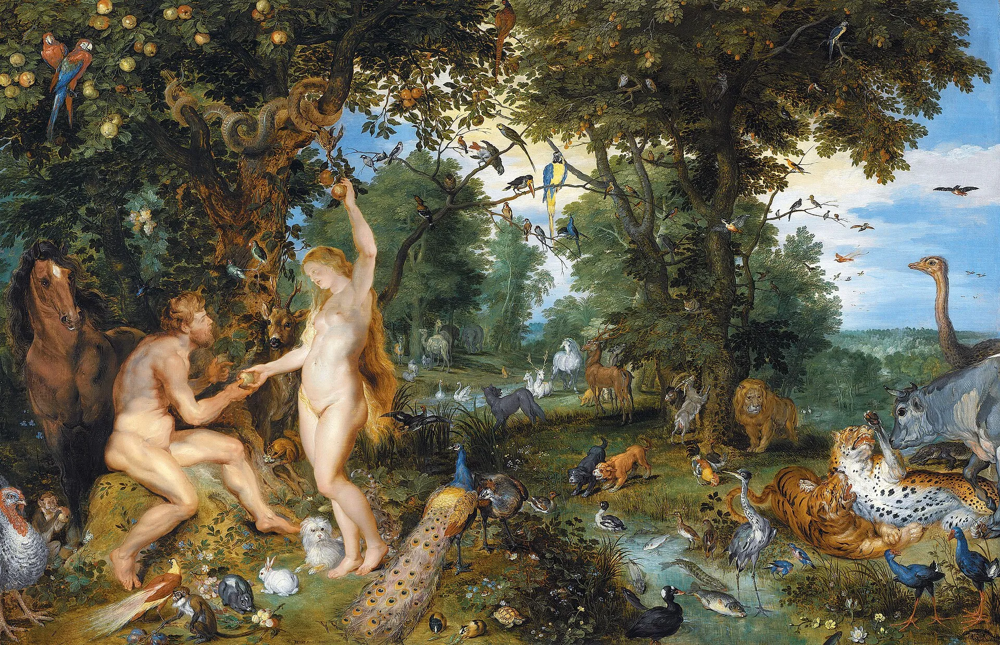
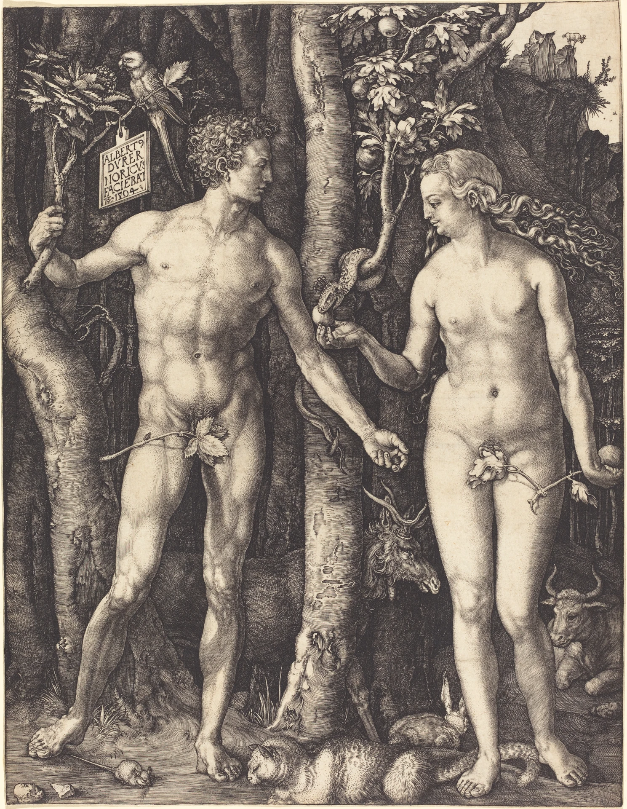
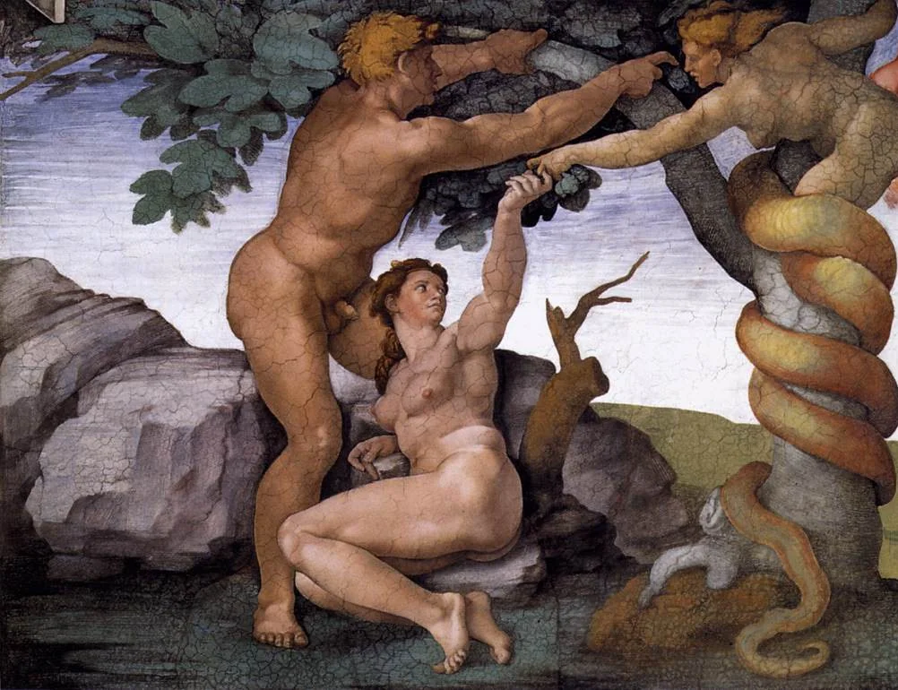
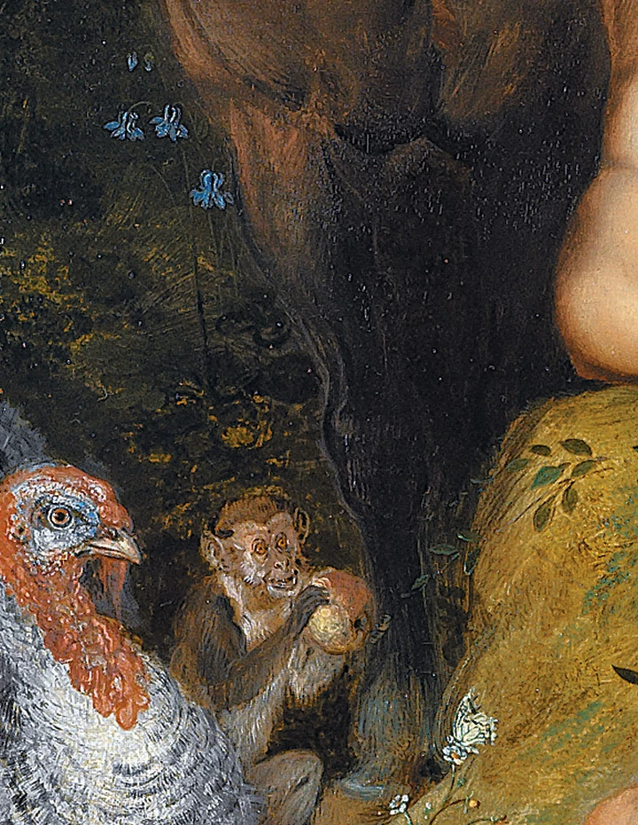

아직 펼치지 않은 카드매일 쓰는 말에 숨은 성경 · 1일상 말 속 성경 이야기아담과 하와가 먹은 열매는 무엇이었을까요? 많은 그림이 사과로 그리지만, 성경에는 뭐라고 적혀 있을까요?아담과 하와가 먹은 건 진짜 사과였을까?
창세기 3장 · 1504년에덴동산 · 독일 뉘른베르크
일상 말 속 성경 이야기
창세기는 하와(영어로는 이브)가 딴 것을 ‘열매’라고만 불러요. 1504년 독일 뉘른베르크의 알브레히트 뒤러는 그 순간을 구리판에 새겼는데, 잎은 무화과를 닮았고 열매는 사과처럼 둥글어요. 둘째 장면의 흑백 판화에서 열매와 나무와 짐승을 하나씩 찾아보세요.
아담과 하와가 먹은 열매, 성경에는 이름이 없대. 옛날 화가가 새긴 그림에서 열매랑 동물들을 찾아볼까?
검수 전 시안이에요(기준서 1판). 장면에는 기록에 있는 것만 옮겼고, 기록마다 다른 것은 그렇다고 밝혔어요. 상상은 ‘눈 감고 상상해 보기’에만 썼어요.
시안 확인용카드 단계 미리 보기
1
랍비들의 자리
창세기는 그 나무를 ‘동산 가운데 있는 선악을 알게 하는 나무’라고 부르고, 거기 달린 것을 ‘열매’라고만 해요(창세기 2장 9·17절, 3장 3·6절). 그 열매를 우리말로 흔히 ‘선악과’라고 불러요. 창세기가 처음 쓰인 히브리어로 ‘페리’라는 이 낱말은, 어떤 열매든 가리킬 수 있는 말이에요.
그래서 유대 랍비들은 오래전부터 이 열매를 두고 저마다 다른 답을 냈어요. 그 토론이 탈무드(유대교의 가르침과 토론을 모은 책)와 창세기 풀이책 『창세기 라바』에 남아 있어요.
“하나님은 그 나무가 무엇인지 누구에게도 알려 주지 않으셨고, 앞으로도 알려 주지 않으실 것이다.”
『창세기 라바』 15장 7절, 랍비 여호수아 벤 레위의 이름으로 전하는 말 · 영어 번역(유대 고전 누리집 세파리아)을 이 안내서가 옮김
위 그림은 루벤스와 브뤼헐이 1615년 무렵 함께 그린 낙원이에요. 헤이그 마우리츠하위스 미술관은 하와가 건네는 열매를 사과로 설명해요. 그림 왼쪽 아래, 칠면조 곁에서 사과를 베어 무는 작은 원숭이는 죄를 뜻하는 표시로 읽어요.
아래에서 한 랍비의 자리에 앉아, 그 열매를 무엇이라고 할지 골라 보세요. 고르면 그 랍비가 든 까닭이 나와요.
랍비들이 둘러앉은 자리라면, 그 열매를 무엇이라 할까요?
성경에는 무슨 열매인지 이름이 안 쓰여 있어. 옛날 랍비들은 포도, 밀, 무화과라고 저마다 다르게 생각했대.
물어보기너는 그 열매가 뭐였을 것 같아?
2
뒤러의 동판
1504년, 독일 뉘른베르크의 알브레히트 뒤러는 공책 한 쪽만 한 구리판(약 25×20센티미터)에 아담과 하와를 새겼어요. 동판화는 구리판에 가는 홈을 파고 잉크를 채워 종이에 찍어 내는 그림이에요. 그래서 같은 판에서 찍은 여러 장이 지금 여러 나라 미술관에 나뉘어 있어요.
영국 빅토리아 앨버트 박물관은 이 판화를 마치는 데 4년쯤 걸렸다고 해요. 그림 속 열매와 나무, 짐승을 하나씩 눌러 찾아보세요.
그림 속 동그라미를 하나씩 눌러 보세요. ‘가까이 보기’로 크게 볼 수 있어요.

알브레히트 뒤러 「아담과 하와」, 1504년, 동판화, 미국 워싱턴 내셔널 갤러리 · 판화: 알브레히트 뒤러 · 퍼블릭 도메인(CC0) · 미국 내셔널 갤러리 사진 · 위키미디어 공용
그림 위의 숫자나 아래 번호를 눌러 보세요.
일곱 곳을 다 찾았어요. 빅토리아 앨버트 박물관은 이 판화에 사람 몸의 비율을 연구한 뒤러의 공부가 담겼다고 설명해요.
NPR의 2017년 기사는 이 판화 뒤로 유럽의 타락 그림에서 사과가 점점 많아졌다고 써요. 그런데 메트로폴리탄 미술관은 하와가 쥔 가지를 무화과로 읽어요. 한 판화 안에 무화과 잎과 사과처럼 둥근 열매가 함께 있는 셈이에요.
뒤러라는 화가가 구리판에 아주 가는 선으로 새긴 그림이야. 숨은 동물이 많아!
물어보기고양이를 찾았어? 그 옆의 생쥐도 보여?
3
무화과나무 아래
몇 해 뒤, 미켈란젤로는 로마 바티칸의 시스티나 경당(흔히 ‘시스티나 성당’이라고 해요) 천장에 같은 장면을 그렸어요. 이 그림에서 선악을 알게 하는 나무는 잎이 넓게 갈라진 무화과나무예요.
윗몸이 사람인 뱀이 나무를 감고 하와에게 열매를 건네요. 아담은 그 사이 나뭇가지로 손을 뻗어요.

창세기에서 두 사람은 열매를 먹은 뒤 무화과나무 잎을 엮어 몸을 가렸어요(창세기 3장 7절). 랍비 느헤미야가 무화과를 고른 까닭도 이 구절이었어요.
파이돈 출판사의 해설은, 미켈란젤로의 무화과나무를 ‘나무를 무화과로 그리던 더 오래된 유대 해석’을 따른 것으로 보는 사람도 있다고 소개해요.
미켈란젤로는 그 나무를 무화과나무로 그렸어. 잎이 손바닥처럼 넓지?
물어보기나뭇잎 모양을 손가락으로 따라 그려 볼래?
4
고운 사과
1667년 런던에서 존 밀턴의 긴 시 『실낙원』이 나왔어요. 아담과 하와가 사탄의 꾐에 넘어가 낙원을 잃는 이야기예요. 시의 첫머리는 그것을 ‘금지된 나무의 열매(the Fruit of that Forbidden Tree)’라고 불러요.
그런데 시 속에서 이 열매를 두 번 ‘사과’라고 불러요. 한 번은 뱀 속에 든 사탄이 하와에게 자기가 ‘fair Apples(고운 사과들)’를 맛보았다고 들려주는 말, 또 한 번은 사탄이 타락한 천사들에게 ‘with an Apple(사과 하나로)’ 사람을 꾀었다고 자랑하는 말이에요.

옛 영어의 열매 이름은 ‘apple’과 ‘berry(딸기류)’ 둘뿐이어서, ‘apple’은 딸기류만 빼고 열매를 두루 가리키는 말이었어요. NPR 기사에서 영문학자 로버트 애플바움은, 밀턴 뒤의 독자들이 이 ‘apple’을 오늘의 사과로만 읽게 되었다고 말해요.
이 속표지는 첫판이라 ‘열 권(TEN BOOKS)’이라고 적혀 있어요. 1674년 둘째 판부터 열두 권이 되었어요.
영국 시인 밀턴은 그 열매를 ‘사과’라고 썼어. 그 뒤로 사람들은 그 열매를 사과로 떠올리게 되었대.
물어보기사과가 아니라 무화과였다면, 그림이 어떻게 달라졌을까?
눈 감고 상상해 보기
1504년 뉘른베르크의 작업실을 떠올려 보세요. 창가의 밝은 빛 아래, 공책만 한 구리판 위로 날카로운 조각칼이 지나가요. 사각, 사각. 고양이 털 한 올, 나뭇잎 맥 한 줄이 조금씩 드러나요.
눈을 감아 봐. 아주 작은 칼로 구리판에 선을 하나씩 새기고 있어. 사각사각. 무엇이 나타날까?
나의 자리
내가 자주 쓰는 말 가운데, 뿌리를 알고 나면 다르게 들릴 말은 무엇일까요?
네가 좋아하는 말은 어디서 왔을까?
마음에 닿는 한 줄을 고르거나 직접 써 보세요. 한 줄을 남기면 이 자리의 도장이 찍혀요. 이 기기에만 저장돼요.
더 깊이
이야기를 보다 궁금해질 만한 것들이에요. 답을 읽거나 짧은 영화로 보세요.

성경엔 ‘열매’라고만 했다면서, 누가 언제 사과로 바꿔 놨어요?
그 뱀은 누구예요? 사탄이에요?
뒷이야기
아직 펼치지 않은 이야기예요. 누르면 이야기가 펼쳐지고 색이 돌아와요. 더 알고 싶으면 근거를 따라가 보세요.
다 펼치면, 다음에 오실 때 새 이야기가 찾아와요.
오늘의 뒷이야기는 여기까지예요. 다음에 오시면 새 이야기가 기다리고 있어요.
펼친 뒷이야기 · 누르면 다시 볼 수 있어요
더 찾아보기
기록마다 다른 점
랍비들의 답 탈무드 베라코트 40a에서는 메이르가 포도, 예후다가 밀이라고 해요. 『창세기 라바』 15장 7절에서는 메이르가 밀, 예후다가 포도라고 서로 바뀌어 있어요. 무화과를 말한 사람도 탈무드는 느헤미야, 『창세기 라바』는 요세라고 적어요.
사과가 된 까닭 라틴어 성경은 그 나무를 ‘선과 악(mali)을 아는 나무’라고 옮겼어요. 라틴어 mălum(악)과 mālum(사과)이 비슷해서 생긴 말장난이 사과를 불렀다는 설명이 널리 퍼져 있어요. 그런데 아잔 야딘-이스라엘(2022년)은 그 두 뜻을 다룬 옛 라틴어 기록이 없다고 반박해요. 그는 600점 가까운 그림을 살펴, 사과가 12세기 프랑스 그림에서 처음 자리 잡았고, 열매를 뜻하던 옛 프랑스어 ‘pom’이 ‘사과’로 좁아진 일과 이어진다고 봐요.
뒤러의 나무 메트로폴리탄 미술관은 하와가 쥔 가지를 선악을 알게 하는 나무에서 꺾은 무화과로 설명해요. NPR 기사는 두 사람이 사과나무 곁에 서 있다고 써요.
직접 보기
확인한 날 · 2026년 11월 18일 · 바뀌기 쉬운 정보라 정기적으로 다시 확인해요
뒤러의 「아담과 하와」는 같은 판에서 찍은 여러 장이 세계 여러 미술관에 나뉘어 있어요. 이 카드의 그림은 미국 워싱턴 내셔널 갤러리의 한 장이에요. 미켈란젤로의 그림은 바티칸 시스티나 경당 천장에, 루벤스와 브뤼헐의 그림은 네덜란드 헤이그 마우리츠하위스에 있어요.
전시 여부는 바뀔 수 있으니, 보러 가시기 전에 누리집에서 확인해 주세요.
일곱 곳 다 찾기 금박
뒤러의 판화에서 일곱 곳을 모두 찾아 읽으면 카드에 금박이 입혀져요.
그림 속 일곱 곳을 모두 찾아 읽기
랍비의 자리에서 채색
둘 가운데 하나만 해도 카드가 채색돼요.
랍비들의 자리에서 그 열매를 하나 골라 보기
아이와 함께 ‘영화처럼 보기’를 끝까지 보기
근거 보기 (23)
- 대한성서공회 개역개정: 창세기 2장 — 동산 가운데 생명나무와 선악을 알게 하는 나무(9절), 그 열매를 먹지 말라(16~17절)
- 대한성서공회 개역개정: 창세기 3장 — 동산 중앙 나무의 열매(3절), 먹음직·보암직(6절), 무화과나무 잎(7절)
- 세파리아: 탈무드 베라코트 40a — 메이르는 포도(노아의 포도주), 느헤미야는 무화과(무화과 잎), 예후다는 밀(곡식 맛과 아빠·엄마)
- 세파리아: 『창세기 라바』 15장 7절 — 메이르는 밀, 예후다는 포도, 아코의 아바는 시트론(나무와 열매의 맛이 같음), 요세는 무화과, 여호수아 벤 레위: 그 나무를 알려 주지 않으심
- 마우리츠하위스: The Garden of Eden with the Fall of Man — 1615년 무렵, 루벤스가 아담·하와·나무·말·뱀, 브뤼헐이 풀과 짐승, 하와가 건네는 사과, 사과를 무는 원숭이(죄의 표시)
- NPR 기사(니나 마티리스, 2017, KPBS에 실림): 히브리어 페리는 어떤 열매든, 랍비들의 여러 답, 라틴어 말장난 설(애플바움), 미켈란젤로의 무화과나무, 뒤러 판화 뒤 사과가 많아짐, 밀턴이 두 번 사과라 부름, 밀턴 뒤의 독자들
- 메트로폴리탄 미술관 19.73.1: 뒤러 Adam and Eve — 1504년, 25.1×20cm, 아담의 마가목은 생명나무, 하와가 꺾은 무화과 가지는 선악을 알게 하는 나무, 고양이·토끼·소·엘크와 네 기질, 사람 몸의 비율
- 미국 내셔널 갤러리 1943.3.3492: 이 카드의 판화 — 가지 위 앵무새, 이름표 글(ALBERT / DVRER / NORICVS / FACIEBAT 1504), 고양이·엘크·소·생쥐·토끼, 오른쪽 위 바위의 염소
- 빅토리아 앨버트 박물관: Adam and Eve — 4년쯤 걸림, 마가목은 생명나무, 앵무새와 이름표, 산양, 생쥐와 고양이, 이름표의 번역(뉘른베르크의 알브레히트 뒤러가 만들었다 1504), 사람 몸 비율 연구
- 영국 박물관 1868,0822.167: 선악을 알게 하는 나무 양쪽의 두 사람, 짐승들, 다섯 번의 상태와 많은 밑그림, 가장 길고 눈에 띄는 이름 글
- 호주 빅토리아 국립 미술관: 고양이와 쥐(쫓겨난 뒤의 다툼), 앵무새(지혜·너그러움·동정녀 탄생), 네 기질과 짐승, 염소(믿지 않음)
- 바티칸 박물관: 원죄와 낙원에서 쫓겨남 — 선악의 나무를 감은 뱀이 하와에게 열매를 건넴
- 아틀라스 옵스큐라: 미켈란젤로의 무화과 — 시스티나 천장의 나무에는 무화과가 열림
- 파이돈(The Art Museum 해설): 미켈란젤로의 「유혹」 속 나무는 무화과, 더 오래된 유대 해석을 따른 것으로 보는 이도 있음
- 다트머스 대학 밀턴 읽기 방: 『실낙원』 9권 585행 ‘those fair Apples’(사탄이 하와에게)
- 다트머스 대학 밀턴 읽기 방: 『실낙원』 10권 487행 ‘with an Apple’(사탄이 타락한 천사들에게)
- 브리태니커: Paradise Lost — 1667년 10권, 1674년 둘째 판 12권, 아담과 하와의 타락 이야기
- 워드히스토리스(2016): forbidden fruit — 불가타 창세기 2장 17절 ‘scientiae boni et mali’, 사과는 고전 이후 라틴 전통, 탈무드의 포도·무화과·밀, 라틴어 mālum·mălum 말장난 가능성, 영어 apple은 원래 열매를 두루 가리킴
- 「Temptation Transformed」 서평(에이미 발로그): 야딘-이스라엘(시카고 대학 출판부 2022) — malum 말장난 설에 근거가 없음, 12세기 프랑스 그림, 600점 가까운 그림, 라틴어 pomum·옛 프랑스어 pom이 사과로 좁아짐
- 위키미디어 공용: 루벤스·브뤼헐 「낙원과 사람의 타락」 사진 정보
- 위키미디어 공용: 뒤러 「아담과 하와」(미국 내셔널 갤러리, CC0) 사진 정보
- 위키미디어 공용: 미켈란젤로 「원죄와 낙원에서 쫓겨남」 사진 정보(1509~1510년 무렵)
- 위키미디어 공용: 『실낙원』 1667년 속표지(하버드 호턴 도서관) 사진 정보
그림·사진·소리 출처
- 판화: 알브레히트 뒤러 · 퍼블릭 도메인(CC0) · 미국 내셔널 갤러리 사진 · 위키미디어 공용
- 그림: 미켈란젤로 · 퍼블릭 도메인 · 위키미디어 공용
- 속표지: 존 밀턴 『실낙원』(1667년) · 퍼블릭 도메인 · 하버드 대학 호턴 도서관 사진 · 위키미디어 공용
- 판화: 알브레히트 뒤러 · 퍼블릭 도메인(CC0) · 미국 내셔널 갤러리 사진 · 위키미디어 공용
- 판화: 알브레히트 뒤러 · 퍼블릭 도메인(CC0) · 미국 내셔널 갤러리 사진 · 위키미디어 공용
- 판화: 알브레히트 뒤러 · 퍼블릭 도메인(CC0) · 미국 내셔널 갤러리 사진 · 위키미디어 공용
- 판화: 알브레히트 뒤러 · 퍼블릭 도메인(CC0) · 미국 내셔널 갤러리 사진 · 위키미디어 공용
- 그림: 얀 브뤼헐(1세)·페테르 파울 루벤스 · 퍼블릭 도메인 · 위키미디어 공용
- 그림: 얀 브뤼헐(1세)·페테르 파울 루벤스 · 퍼블릭 도메인 · 위키미디어 공용
- 그림: 얀 브뤼헐(1세)·페테르 파울 루벤스 · 퍼블릭 도메인 · 위키미디어 공용
- 그림: 미켈란젤로 · 퍼블릭 도메인 · 위키미디어 공용
- 그림: 얀 브뤼헐(1세)·페테르 파울 루벤스 · 퍼블릭 도메인 · 위키미디어 공용
- 그림: 얀 브뤼헐(1세)·페테르 파울 루벤스 · 퍼블릭 도메인 · 위키미디어 공용
- 그림: 얀 브뤼헐(1세)·페테르 파울 루벤스 · 퍼블릭 도메인 · 위키미디어 공용
‘처음 만나는 기독교 문화’의 깊은 카드예요. 실제 인물의 사진은 쓰지 않았어요. 카드 단계와 남긴 글은 이 기기에만 저장돼요.